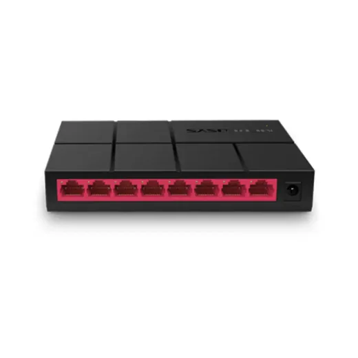
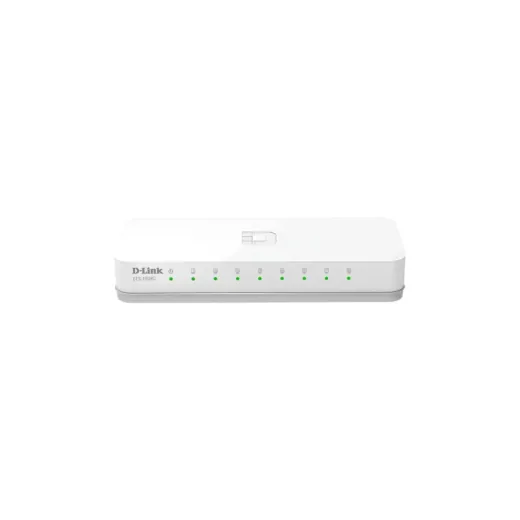
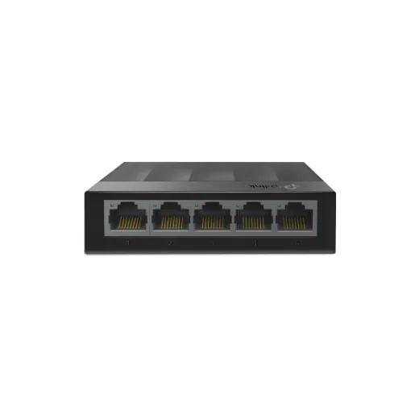
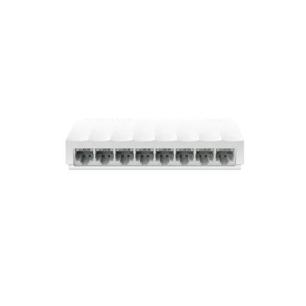
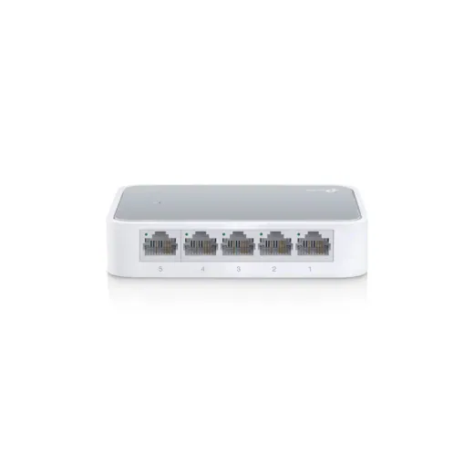
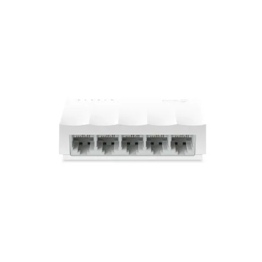
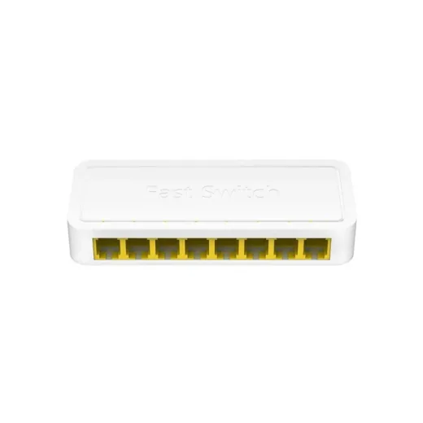
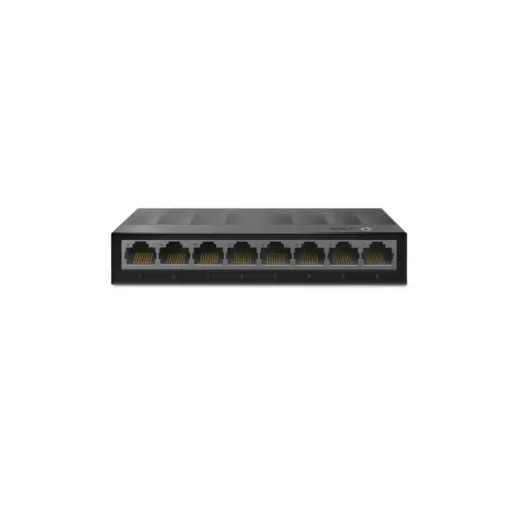

Inicio › Otros de tecnología y hogar

Puertos · Modelo MS108G
Switch de 8 Puertos MERCUSYS MS108G 10/100/1000 Sobremesa
L 375
En Sycom
Precio en cada tienda
| Tienda | Precio | Antes | Disponibilidad | |
|---|---|---|---|---|
| Sycom | L 375 | — | Disponible | Ver en tienda › |
Precios referenciales tomados de cada tienda el 14 de noviembre de 2026. El precio válido es el que muestra la tienda al comprar.
Otros otros de tecnología y hogar Puertos

Switch de 8 Puertos DLink DES-1008C 10/100L 402.5En Sycom
Switch de 5 Puertos TPLINK LS1005G GigabitL 420En Sycom
Switch de 8 Puertos TPLINK LS1008 10/100 MbpsL 320En Sycom
Switch de 5 Puertos TPLINK TL-SF1005D 10/100 Mbps N/DL 295En Sycom
Switch de 5 Puertos TPLINK LS1005 10/100MbpsL 260En Sycom
Switch de 8 Puertos Cudy FS108D 10/100 DesktopL 215En Sycom
Switch de 8 Puertos TPLINK LS1008G GigabitL 595En Sycom Switch de 8 Puertos TP-Link TL-SG108 Desktop GigabitL 695En Sycom
Switch de 8 Puertos TP-Link TL-SG108 Desktop GigabitL 695En Sycom